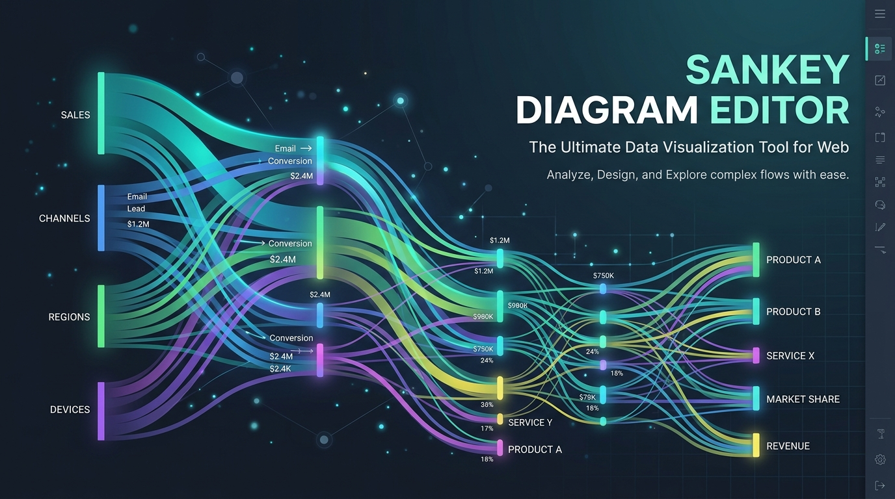

Ferramentas criativas
Editor de diagrama Sankey
Desenhe como as coisas fluem. Crie e exporte diagramas no navegador.
Uma foto vira um relevo 3D, dividido em camadas para criar um retrato metálico.

De uma fotografia frontal aos moldes de corte de um retrato em camadas: um relevo topográfico feito de chapas de metal, coladas à mão, camada por camada.
Faceslice transforma uma fotografia frontal em padrões de corte para um relevo em camadas em chapa metálica ou cartolina. Insira uma distância interpupilar (IPD) em milímetros para definir a escala. O resultado é um relevo do lado visível da cabeça, e não uma varredura de toda a cabeça.
Faceslice combina três modelos de visão computacional para estimar o relevo: a segmentação traça a silhueta; a profundidade monocular estima um amplo volume; e pontos de referência faciais adicionam detalhes ao redor do nariz, olhos e lábios. A geometria é uma estimativa de uma única imagem.
O relevo é cortado em planos paralelos em ângulos ajustáveis. As fatias frontais aninham-se umas dentro das outras, com guias de alinhamento gravadas. A ferramenta pode remover material interno oculto e exportar folhas de corte DXF. Verifique as dimensões e configurações de corte com a oficina antes da fabricação.


Vanilla JavaScript (Módulos ES), tela responsiva e renderização de contorno SVG, controles deslizantes paramétricos em tempo real e arquitetura PWA com capacidade offline.
O mecanismo Python 3 usa MediaPipe, ONNX Runtime, NumPy, SciPy e OpenCV. Sua própria geometria e módulos DXF lidam com fatiamento e corte de folhas.
A fonte inclui uma receita de contêiner Podman e instruções de execução local. O tempo de processamento da CPU depende da imagem e da máquina. Uma implantação pública precisa de HTTPS e de um terminal de administração privado.

Desenhe como as coisas fluem. Crie e exporte diagramas no navegador.

Mude a gravidade e cultive um jardim em um tranquilo jogo de quebra-cabeças baseado em física.

Um lugar para pensamentos soltos, fotos e notas de voz antes que desapareçam.